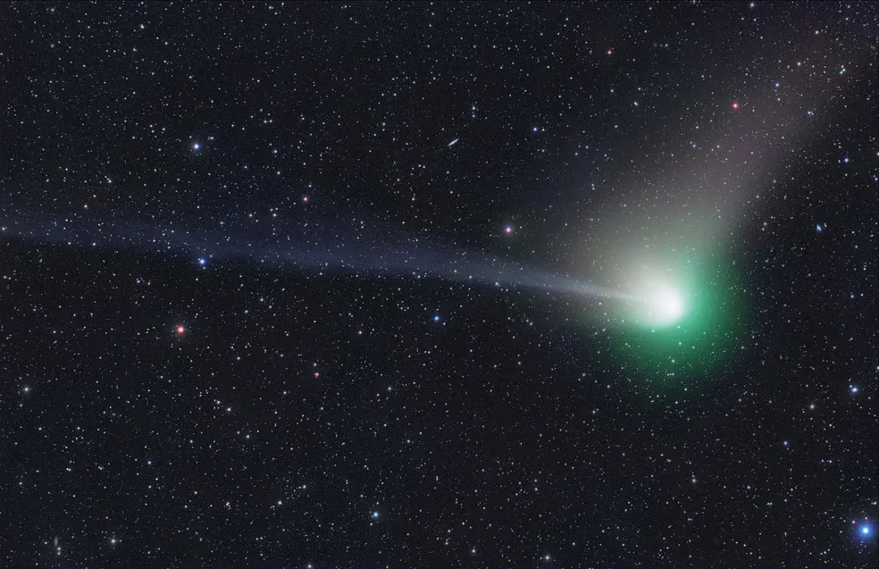

Cometa verde: fenômeno raro
pode ser visto nesta sexta-feira (3)
em Brasília
Passagem do C/2022 E3 (ZTF) ocorre a cada 50 mil anos. Especialista explica como assistir a olho nu.
Por: eu mesmo kkkk
06/02/2023 20h


